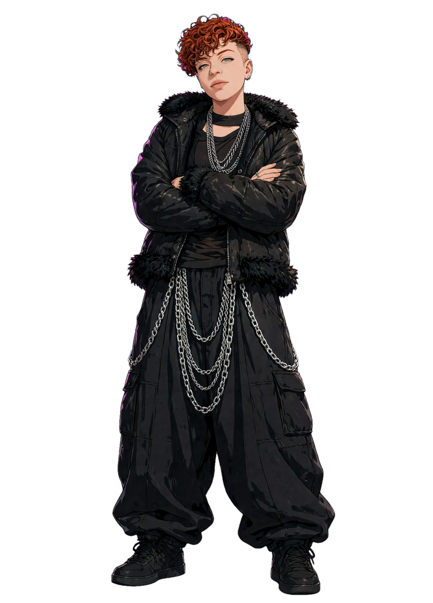
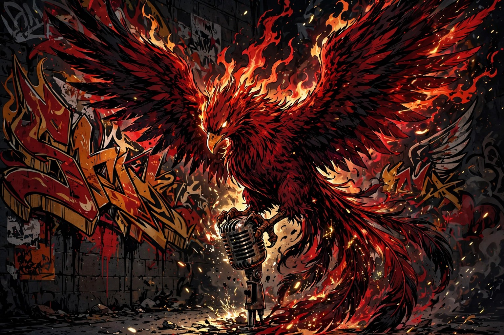
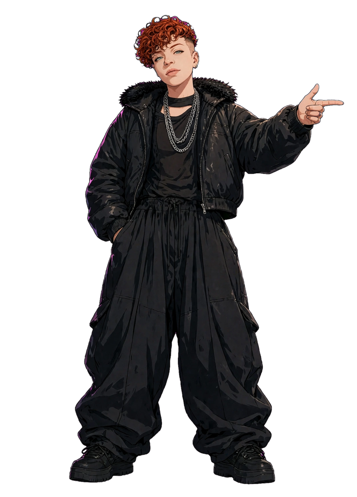

MC COMMAND CENTER
FÊNIX
VAMPHYRA
MESTRE DE CERIMÔNIAS
Presença de palco. Memória cultural. Voz em movimento.
CENTRAL PESSOAL · CULTURA EM MOVIMENTO
Planeje. Apresente. Registre. Preserve.
SEU PRÓXIMO MOVIMENTO
Sua próxima roda começa aqui.
Cadastre um evento para organizar a data, o local, os convidados e o roteiro.

VISÃO GERAL
Central de comando.
Seu trabalho organizado em um só lugar.
Próximos movimentos
PRODUÇÃO
Agenda & eventos.
Crie, edite e acompanhe cada etapa.
PREPARAÇÃO DE PALCO
Meus roteiros.
Blocos editáveis, organizados para a sua apresentação.
APRESENTAÇÃO AO VIVO
Modo palco.
Leitura limpa, sem distrações.
BLOCO ATUAL
Nenhum roteiro selecionado
Escolha um evento com blocos de roteiro para começar.
0 / 0
TEMPORIZADOR00:00
REDE CULTURAL
Convidados & rede.
Perfis, créditos e participações em um só cadastro.
COLABORAÇÃO
Patrocinadores & parceiros.
Créditos, apoios, editais e equipes.
ACERVO CRIATIVO
Biblioteca de materiais.
Importe e mantenha seus arquivos organizados no dispositivo.
Os arquivos importados ficam no armazenamento local deste navegador. Exporte um backup regularmente para evitar perda de dados.
MEMÓRIA DOCUMENTAL
Arquivo histórico.
Eventos concluídos, preservados como registros de trajetória.
TRAJETÓRIA
Portfólio profissional.
Selecione os registros que deseja apresentar publicamente.

MESTRE DE CERIMÔNIAS
Fênix Vamphyra
Apresentação, mediação cultural e presença de palco.
Eventos para o portfólio
PERSONALIZAÇÃO
Configurações.
Ajuste a aparência e os dados sem alterar os arquivos originais.
Identidade visual
Dados e segurança
Faça cópias dos registros e dos dados estruturados.
Sobre esta versão
Aplicativo web instalável, com dados salvos neste dispositivo. Não possui sincronização em nuvem nem publicação automática em redes sociais.
Versão 0.2 · Os avatares originais de referência foram preservados sem edição.